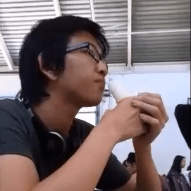
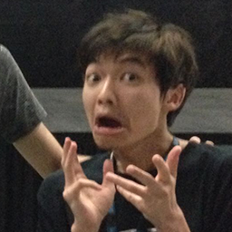

|
 |
 |
 |
 |
|
|
|
|
|
Meet your fellow officers in charge of the club!

|
Justin "Shintomo" Veyna 2nd year, Computer Science (Nov. 2014 - Present) 


|
Hey all! I entered UCI in the fall of 2014 as first year computer science major. In my free time I like to watch lots of anime, play a whole bunch of different games(Steam games and League of Legends), and I also like to yoyo. I started playing osu! in 2013 starting out as a mouse only player and gradually switching over to tablet + keyboard. I no longer play osu! actively and reached a peak rank of 9.8k.
-Justin Veyna

|
Bradley "mauler68" Shood 2nd year, Computer Science (Nov. 2014 - Present)
|
こんにちは fellow osu! players! My name is Bradley (Brad) I graduated from Leigh High School in San Jose and came to UCI to study Computer Science.
I used to have a lot of interest in games, but after discovering the glorious nippon I didn't have time for them anymore. I knew about osu! since May 2014 and I thought the concept of the game was pretty cool; though I didn't really take the game seriously until the start of Fall 2014.
My friend/roomate/other club officer (Justin) was actually pretty good at the game, and watching him play motivated me to try and git gud. Besides osu!, other things I do for fun involve technology and Japanese media.
-Bradley Shood
|  |
Jimmy "Jim" Zhang 4th year, Psychology (Mar. 2015 - Present)
|
I’m Jimmy and I’m a 3rd year psychology student. I’m a transfer from Santa Monica College and a Los Angeles native. I’m big on mechanical keyboards and am currently on a quest to collect every switch type available. I’m able to consume enough sugar in one sitting to kill a small horse and I’m pretty sure I’ve spent more time on my computer in the past year than most people do in five. On the weekends I enjoy swimming and trying to cook up new recipes in hopes that I can become someone’s ultimate waifu.
I started Osu! about two years ago and have been playing really on and off since then. I’ve been playing more seriously for about 6 months now. I used to grind super hard for accuracy in DT maps (PP farm ayyyy lmao (◕‿◕✿)) but nowadays I usually just go on to enjoy the music and have some fun with friends.
I couldn’t stream more than 5 notes accurately if my life depended on it. I primarily enjoy jump and speed maps. My favorite three mappers are HelloSCV, Frostmourne and Fycho. I’ve got a major love/hate relationship with this game, so if you ever hop into a skype call with us and hear someone yelling, it’s probably me.
Aside from Osu! I play a lot of different MMO’s and League of Legends (Jims). You can find me on Tera (Yunosagi, Tempest Reach, don’t really play too much nowadays though) and Dungeon Fighter Online (Iroha, Delieze). Throw me a buddy invite and let’s play sometime!
-Jimmy Zhang

|
Aaron "Xenocidel" Liao 2nd year, Computer Engineering (Apr. 2015 - Present)

|
Hi all! I'm Aaron, a computer hardware enthusiast, DIY hobbyist, and eSports fan. I started playing osu! since 2013 and though I have never been musically (rhymically?) inclined, I rather enjoy the game a lot.
Speaking of hardware and DIY, I made a two-key keypad for osu! called "two-K." It was a project that started in April 2015 and involved 3D modelling using SolidWorks, 3D printing, and soldering. Now peppy has his own osu! branded "nono" keypads, so unfortunately he's outcompeted me. They're still up for sale by the way! Contact me via Facebook or email if you may be interested.
I am also a tournament organizer for the osu! and StarCraft II divisions of the High School Starleague [Link], an organization that runs year-long esports leagues and gives out scholarships to the top placers.
In the rare occasions when I'm not browsing reddit or watching YouTube, I like to play racquetball or build computers for people. Hit me up if you're interested in either of those things :D
-Aaron Liao

|
Royce "TheWeirdo9" Sato 3rd year, Chemical Engineering (Aug. 2015 - Present)
|
Hi, I'm Royce Sato, a third year chemical engineering student. I started playing osu! around Fall 2013, and I haven't improved since then. I play mouse+keyboard; I used to play tablet, but my hand couldn't take the heat, so I stick with mouse. I don't DT farm. I also play mania 4k, it's really fun and everyone should quit standard and play mania. Other hobbies include playing the piano, yo-yoing, which Jimmy and Justin got me into, and speedcubing. I'm also eternally “studying” Japanese.
-Royce Sato
|  |
Max "osuuci dot com" Chung 4th year, Computer Game Science (Nov. 2014 - Dec. 2015)

|
What's up everyone. I'm Wax Chug da Gwad. Some of you guys may know me as Max Chung. I started playing osu! 3 years ago, but have only been playing it on-and-off as a side game, with months of break in between. It wasn't until last fall quarter that Justin, Brad, and I randomly met up and found out we all played osu!.
Thinking it was a good chance for me to get more serious about the game, meet new people, and try something new, I took the lead in starting up this club and bringing it to where it is now. It's been an absolute blast playing the game with everyone so far, and I hope we grow in numbers and do greater things in the future!
Outside of osu!, I'm an active officer and developer of the Video Game Development Club at UCI. I love making games, and it's thanks to VGDC that I've met a ton of awesome people and have the passion I have now. Big shoutouts to them! If you're at all interested in game development, definitely check them out and get involved.
I watch a fair bit of anime in my free time, not religiously anymore, but still a good chunk here and there, and as a result of anime, osu!, and NicoNico, I listen to a lot of Japanese/anime/vocaloid/utaite music. My favorite animes of all time are The Tatami Galaxy, the first 15 minutes of Redline, and the last 15 minutes of Mind Game. My favorite vocaloid producer is MikitoP, and my favorite song by him is "Sayoko" by Kano.
-Wax "Max 'Shrackner' Chung" Chug da Gwad

|
Victor "lalipo" Stolle 4th year, Software Engineering (Apr. 2015 - Nov. 2015)
|
Hello there! My name is Victor Stolle, and I am a 3rd year Software Engineering student. I started playing osu! 3 years ago when Max introduced this difficult rhythm game in between queues of League of Legends.
In osu! my average song difficulty is between 3-4 stars, and I play with the traditional mouse + keyboard setup. My favorite genres of music in the game are fast-paced, high BPM songs belonging to either electronic or rock.
Other than osu! I am a somewhat-active member of the Video Game Design Club, a member of the intramural water polo team, and a video game enthusiast. I play a lot of League of Legends and Diablo 3, and my favourite strategy game is Age of Empires 3. I also watch "a little bit" of anime every now and then, and listen to all genres of music.
-Victor Stolle